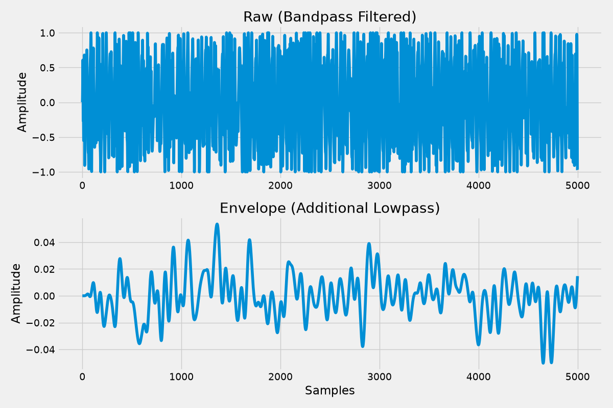
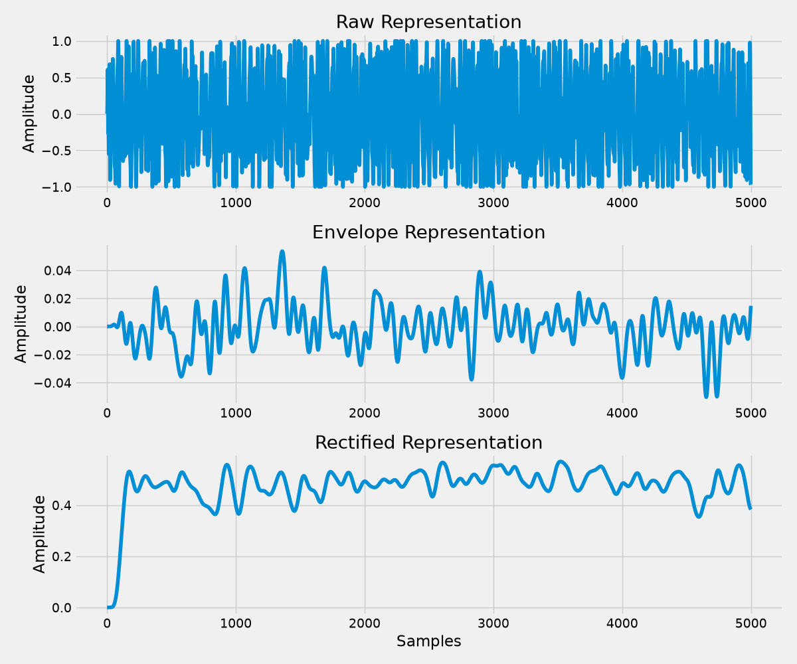
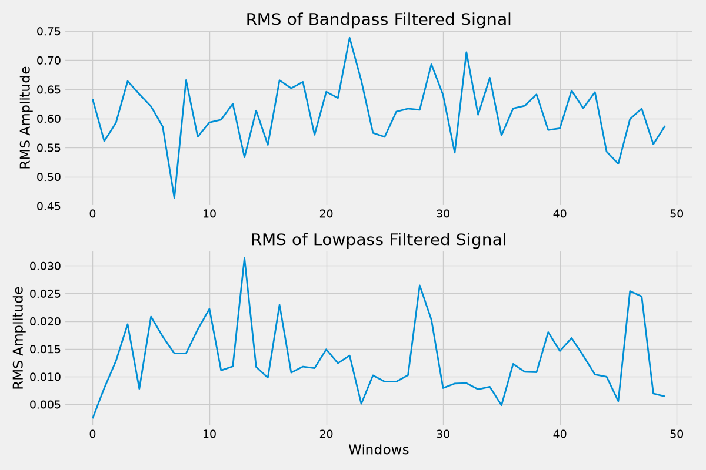
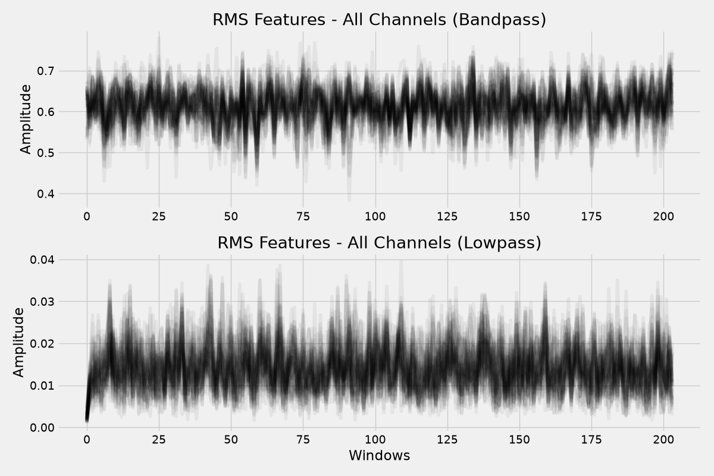

Note
Go to the end to download the full example code.
Complex Filtering Pipelines#
This example shows how to build complex filter pipelines with multiple representations using the dimension-aware transform system.
Loading Data#
Load EMG data and wrap as a named tensor.
import pickle as pkl
from pathlib import Path
import matplotlib.pyplot as plt
import torch
import myotorch
# Get the path to the data file
# Find data directory relative to myotorch package (works in all contexts)
import myotorch
_pkg_dir = Path(myotorch.__file__).parent.parent
DATA_DIR = _pkg_dir / "examples" / "data"
if not DATA_DIR.exists():
DATA_DIR = Path.cwd() / "examples" / "data"
with open(DATA_DIR / "emg.pkl", "rb") as f:
emg_data = pkl.load(f)
SAMPLING_FREQ = 2048
emg = myotorch.emg_tensor(emg_data["1"], fs=SAMPLING_FREQ)
print(f"EMG data loaded: {emg.names} {emg.shape}")
plt.style.use("fivethirtyeight")
EMG data loaded: ('channel', 'time') torch.Size([320, 20440])
Simple Pipeline: Highpass + Lowpass#
A common preprocessing sequence: 1. Highpass filter (20 Hz) to remove DC and movement artifacts 2. Lowpass filter (450 Hz) to remove high frequency noise
from myotorch.transforms import Compose, Highpass, Lowpass
# Preprocessing pipeline using Compose
preprocess = Compose([
Highpass(cutoff=20, fs=SAMPLING_FREQ, dim="time"),
Lowpass(cutoff=450, fs=SAMPLING_FREQ, dim="time"),
])
filtered = preprocess(emg)
print(f"Preprocessed: {filtered.names} {filtered.shape}")
Preprocessed: ('channel', 'time') torch.Size([320, 20440])
Multi-Representation with Stack#
Often we want multiple representations of the same signal. Stack applies multiple transforms and combines them along a new dimension.
from myotorch.transforms import Identity, Stack
# Create two representations:
# - "raw": Just the preprocessed signal
# - "envelope": Lowpass filtered version (smooth envelope)
dual_repr = Stack({
"raw": Identity(),
"envelope": Lowpass(cutoff=20, fs=SAMPLING_FREQ, dim="time"),
}, dim="representation")
# Apply to preprocessed data
stacked = dual_repr(filtered)
print(f"Stack output: {stacked.names} {stacked.shape}")
Stack output: ('representation', 'channel', 'time') torch.Size([2, 320, 20440])
Complete Pipeline: Preprocess + Stack#
Combine everything into one pipeline.
complete_pipeline = Compose([
# Preprocessing
Highpass(cutoff=20, fs=SAMPLING_FREQ, dim="time"),
Lowpass(cutoff=450, fs=SAMPLING_FREQ, dim="time"),
# Multi-representation
Stack({
"raw": Identity(),
"envelope": Lowpass(cutoff=20, fs=SAMPLING_FREQ, dim="time"),
}, dim="representation"),
])
output = complete_pipeline(emg)
print(f"\nComplete pipeline:")
print(f"\tInput: {emg.names} {emg.shape}")
print(f"\tOutput: {output.names} {output.shape}")
Complete pipeline:
Input: ('channel', 'time') torch.Size([320, 20440])
Output: ('representation', 'channel', 'time') torch.Size([2, 320, 20440])
Visualizing the Pipeline Output#
channel = 0
samples = 5000
plt.figure(figsize=(12, 8))
plt.subplot(2, 1, 1)
plt.plot(output[0, channel, :samples].rename(None).numpy())
plt.title("Raw (Bandpass Filtered)")
plt.ylabel("Amplitude")
plt.subplot(2, 1, 2)
plt.plot(output[1, channel, :samples].rename(None).numpy())
plt.title("Envelope (Additional Lowpass)")
plt.xlabel("Samples")
plt.ylabel("Amplitude")
plt.tight_layout()
plt.show()

Complex Stacking: Multiple Feature Representations#
Create multiple feature representations from the same input.
from myotorch.transforms import Rectify
# Stack with nested Compose for complex branches
feature_stack = Stack({
"raw": Identity(),
"envelope": Lowpass(cutoff=20, fs=SAMPLING_FREQ, dim="time"),
"rectified": Compose([
Rectify(),
Lowpass(cutoff=20, fs=SAMPLING_FREQ, dim="time"),
]),
}, dim="representation")
# Apply to preprocessed data
stacked_features = feature_stack(filtered)
print(f"Stacked features: {stacked_features.names} {stacked_features.shape}")
Stacked features: ('representation', 'channel', 'time') torch.Size([3, 320, 20440])
Visualizing Multiple Features#
plt.figure(figsize=(12, 10))
names = ["raw", "envelope", "rectified"]
for i, name in enumerate(names):
plt.subplot(3, 1, i + 1)
plt.plot(stacked_features[i, channel, :samples].rename(None).numpy())
plt.title(f"{name.capitalize()} Representation")
plt.ylabel("Amplitude")
if i == 2:
plt.xlabel("Samples")
plt.tight_layout()
plt.show()

Pipeline with RMS Feature Extraction#
Extract RMS features from multiple representations.
from myotorch.transforms import RMS
rms_pipeline = Compose([
# Preprocess
Highpass(cutoff=20, fs=SAMPLING_FREQ, dim="time"),
# Multi-representation
Stack({
"bandpass": Identity(),
"lowpass": Lowpass(cutoff=20, fs=SAMPLING_FREQ, dim="time"),
}, dim="representation"),
# Apply RMS to both representations
RMS(window_size=100, dim="time"),
])
rms_output = rms_pipeline(emg)
print(f"RMS pipeline output: {rms_output.names} {rms_output.shape}")
RMS pipeline output: ('representation', 'channel', 'time') torch.Size([2, 320, 204])
Visualizing RMS Features#
# Adjust samples for RMS output (reduced time dimension)
rms_samples = min(samples // 100, rms_output.shape[-1])
plt.figure(figsize=(12, 8))
plt.subplot(2, 1, 1)
plt.plot(rms_output[0, channel, :rms_samples].rename(None).numpy(), linewidth=2)
plt.title("RMS of Bandpass Filtered Signal")
plt.ylabel("RMS Amplitude")
plt.subplot(2, 1, 2)
plt.plot(rms_output[1, channel, :rms_samples].rename(None).numpy(), linewidth=2)
plt.title("RMS of Lowpass Filtered Signal")
plt.xlabel("Windows")
plt.ylabel("RMS Amplitude")
plt.tight_layout()
plt.show()

All Channels Visualization#
Plot all channels to see the overall signal structure.
n_channels = min(64, rms_output.shape[1])
plt.figure(figsize=(12, 8))
plt.subplot(2, 1, 1)
for ch in range(n_channels):
plt.plot(
rms_output[0, ch].rename(None).numpy(),
color="black",
alpha=0.05,
)
plt.title("RMS Features - All Channels (Bandpass)")
plt.ylabel("Amplitude")
plt.subplot(2, 1, 2)
for ch in range(n_channels):
plt.plot(
rms_output[1, ch].rename(None).numpy(),
color="black",
alpha=0.05,
)
plt.title("RMS Features - All Channels (Lowpass)")
plt.xlabel("Windows")
plt.ylabel("Amplitude")
plt.tight_layout()
plt.show()

Complete Feature Extraction Pipeline#
A full pipeline with preprocessing, feature extraction, and normalization.
from myotorch.transforms import ZScore
full_pipeline = Compose([
Highpass(cutoff=20, fs=SAMPLING_FREQ, dim="time"),
Lowpass(cutoff=450, fs=SAMPLING_FREQ, dim="time"),
Rectify(),
RMS(window_size=100, dim="time"),
ZScore(dim="time"),
])
final_output = full_pipeline(emg)
print(f"Full pipeline output: {final_output.names} {final_output.shape}")
# Verify normalization
final_data = final_output.rename(None)
print(f"Mean: {float(final_data.mean()):.6f}, Std: {float(final_data.std()):.6f}")
Full pipeline output: ('channel', 'time') torch.Size([320, 204])
Mean: -0.000000, Std: 0.997553
GPU Acceleration#
All pipelines work on GPU for faster processing.
if torch.cuda.is_available():
emg_gpu = emg.cuda()
print(f"\nEMG on GPU: {emg_gpu.device}")
# Apply complete pipeline on GPU
output_gpu = complete_pipeline(emg_gpu)
print(f"Output on GPU: {output_gpu.device}")
else:
print("\nCUDA not available - using CPU")
CUDA not available - using CPU
Summary#
Complex pipelines are built by combining:
Compose - Chain transforms sequentially (from torchvision)
Stack - Create multiple representations along a new dimension
Identity - Pass-through (useful in Stack for “raw” representation)
Key patterns:
```python # Sequential processing Compose([Transform1(), Transform2(), Transform3()])
# Multi-representation (one input -> stacked output) Stack({
“name1”: Transform1(), “name2”: Transform2(),
}, dim=”representation”)
# Complete pattern Compose([
Preprocess(), Stack({
“raw”: Identity(), “filtered”: FilterTransform(),
}, dim=”representation”), PostProcess(), # Applied to all representations
])#
All transforms are dimension-aware - specify dim=”time” to be explicit about which dimension is being processed.
Total running time of the script: (0 minutes 6.589 seconds)
Estimated memory usage: 938 MB